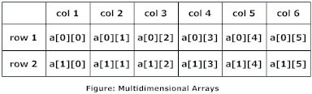

An array of arrays
Some structures such as matrices and tables are conveniently modeled by two-dimensional arrays. Java provides a possibility to process two and more-dimensional arrays. To create a multi-dimensional array we should use an array as an element of another array. In this case, we create an array of arrays. To iterate over multi-dimensional arrays nested loops are often used.

2-dimensional arrays
Here is an example that creates a two-dimensional array:
// two-dim array - the array of arrays
int[][] twoDimArray = {
{1, 2, 3, 1}, // first array of int
{3, 4, 1, 2}, // second array of int
{4, 4, 1, 0} // third array of int
};
In this case, the length of twoDimArray is 3 (because it includes 3 arrays as elements). The length of each nested array is 4. Now if you'd like to get an integer element from the array you should write two indexes:
int number = twoDimArray[0][2]; // it is 3
In this case, the first index specified an element (nested array or row) of twoDimArray. The second index specified the element inside the nested array. Important, all nested arrays can have a different length. See an example below:
int[][] twoDimArray = new int[3][];
twoDimArray[0] = new int[] { 1, 2, 3, 4 }; // the length is 4
twoDimArray[1] = new int[] { 5, 7, 3}; // the length is 3
twoDimArray[2] = new int[] { 8 }; // the length is 1
// let's output the array
for (int i = 0; i < twoDimArray.length; i++) {
System.out.println(Arrays.toString(twoDimArray[i]));
}
The code above outputs:
[1, 2, 3, 4]
[5, 7, 3]
[8]
3-dimensional arrays
You can create an array with more than 2 dimensional (3-dim, 4-dim, 5-dim and so on). Let's create 3-dimensional integer array:
int[][][] cubic = new int[3][4][5];
Now, let's fill each 2D array of the 3D array cubic by the following rules: the first array must contain only "1", the second - "2" and so on. The implementation:
// this code fills the 3-dimensional array
int current = 1;
for (int[][] dim2Array : cubic) { // for each 2-dim array
for (int[] vector : dim2Array) { // for each 1-dim array (vector) of 2-dim array
Arrays.fill(vector, current); // fill the vector
}
current++; // the next current
}
// this code prints all 2-dimensional arrays
for (int[][] dim2Array : cubic) {
for (int[] vector : dim2Array) {
System.out.println(Arrays.toString(vector));
}
System.out.println();
}
This code prints three 2-dim arrays:
[1, 1, 1, 1, 1]
[1, 1, 1, 1, 1]
[1, 1, 1, 1, 1]
[1, 1, 1, 1, 1]
[2, 2, 2, 2, 2]
[2, 2, 2, 2, 2]
[2, 2, 2, 2, 2]
[2, 2, 2, 2, 2]
[3, 3, 3, 3, 3]
[3, 3, 3, 3, 3]
[3, 3, 3, 3, 3]
[3, 3, 3, 3, 3]
Sample
import java.util.Scanner;
public class Main {
public static void main(String[] args) {
float[][] a = new float[2][2];
float[][] b = new float[2][2];
float[][] c = new float[2][2];
Scanner in = new Scanner(System.in);
System.out.println("Introdueix els elements de la 1a matriu:");
/* Reading two dimensional Array with the help of two for loop. If there was an array of 'n' dimension, 'n' numbers of loops are needed for inserting data to array.*/
for(int i = 0; i < 2 ; i++) {
for(int j = 0; j < 2; j++){
System.out.print("Enter "+ (i + 1) + " "+ (j + 1) + ": ");
a[i][j] = in.nextInt();
}
}
System.out.println("Introdueix els elements de la 2n matriu: ");
for(int i = 0 ; i < 2 ; i++) {
for ( int j = 0; j < 2; j++) {
System.out.print("Enter " + (i + 1) + " " + (j + 1) + ": ");
b[i][j] = in.nextInt();
}
}
System.out.println("La 3a matriu serà el sumatori posició a posició de la 1a i la 2a matrius.");
for(int i = 0; i < 2 ; i++) {
for (int j = 0; j < 2; j++) {
c[i][j] = a[i][j] + b[i][j];
}
}
System.out.println("La 3a matriu queda:");
for(int i = 0; i < 2 ; i++) {
for (int j = 0; j < 2; j++) {
System.out.print(String.format("%5.0f",c[i][j]));
}
System.out.println();
}
}
}